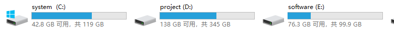

linux基础-文件系统

文章目录
前言
在计算机的文件系统中，根目录指文件系统的最上一级文件目录，它是相对子根目录来说的；它如同一棵大树的“根”一般，全部的树杈以它为起点，故被取名为根目录。以微软公司开发设计的Windows操作系统为例：点开这台电脑（我的电脑、计算机），双击鼠标C盘就进入C盘的根目录。双击鼠标D盘就进入D盘的根目录。
在Linux世界里，一切皆文件。
Linux文件系统是采用层级式的树状目录结构，根目录是“/”
文件系统的概念
计算机的文件系统是一种存储和组织计算机数据的方法，它使得对其访问和查找变得容易。
文件系统使用文件和树形目录的抽象逻辑概念，用户使用文件系统来保存数据不必关心数据实际保存在硬盘的地址为多少的数据块上，只需要记住这个文件的所属目录和文件名即可。
文件系统的分类
ext2 ： 早期linux中常用的文件系统
ext3 ： ext2的升级版，带日志功能
ext4 ： 基于磁盘(存放根目录分区)
NFS ： 网络文件系统，由SUN发明，主要用于远程文件共享
NTFS ： Windows NT/XP 操作系统采用的文件系统
XFS ： 由SGI开发的先进的日志文件系统，支持超大容量文件
ISO9660 ： 大部分光盘所采用的文件系统
SMBFS ： Samba 的服务的共享文件系统
tmpfs : 临时文件系统(内存文件系统)
例如，在 CentOS图文安装教程一章中 设置分区一节中可以看到一些系统类型
文件系统的目录结构
Windows的目录结构
在WIN系统中，查看文件先进入相应的盘符，然后进入文件目录

Linux目录结构
在 Linux 系统中，所有内容都是以文件的形式保存和管理的，即一切皆文件。普通文件是文件，目录（Windows 下称为文件夹）是文件，硬件设备（键盘、监视器、硬盘、打印机）是文件，就连套接字（socket）、网络通信等资源也都是文件。
Linux只有一个根目录，而且文件和目录被组织成一个单根倒置树结构， 此结构最上层是根目录，用“/”表示
根文件系统(rootfs)：root filesystem 标准Linux文件系统（如：ext4）
如下图：

具体地目录结构
-
/bin：
Binary的缩写，这个目录存放着最常使用的命令
-
/sbin：
s就是Super User的意思，这里存放的是系统管理员使用的系统管理程序
-
/home：
存放普通用户的主目录，在Linux中每个用户都有一个自己的目录，一般该目录名是以用户的账号命名的
-
/root：
该目录为系统管理员，也叫做超级权限者的用户主目录
-
/lib：
系统开机所需要的动态连接共享库，其作用类似于Windows的DLL文件。几乎所有的应用程序都需要用到这些共享库
-
lost+found：
这个目录一般情况下是空的，当系统非法关机后，里面存放了一些文件
-
/etc：
所有的系统管理所需要的配置文件和子目录
-
/usr：
一个非常重要的目录，用户的很多程序和文件都放在这个目录下，类似于Windows下的program files目录
-
/boot：
里面存放的是启动Linux时使用的一些核心文件，包括一些连接文件以及镜像文件，自己的安装别放在这里
-
/proc：
这是一个虚拟目录，它是系统内存的映射，我们可以通过最直接访问这个目录来获取系统信息，不能动这个文件
-
/srv：
service的缩写，该目录存放一些服务启动之后所需要提取的数据，不能动这个文件
-
/sys：
这是Linux2.6内核的一个很大的变化。该目录安装了2.6内核中新出现的一个文件系统。不能动这个文件
-
/tmp：
这个目录是用来存放一些临时文件的
-
/dev：
类似于Windows的设备管理器，把所有的硬件以文件的形式储存
-
/media（CentOS6）：
Linux系统会自动识别一些设备，例如U盘、光驱等，当识别后，Linux会把识别的设备挂载到这个目录下
CentOS7迁移到/run/media
-
/mnt：
系统提供目录是为了让用户临时挂载别的文件系统的，我们可以将外部的储存挂载在/mnt/上，然后进入该目录就可以查看里面的内容了
-
/opt：
给主机额外安装软件所存放的目录（软件安装包存放），如安装ORACLE数据库就可放到该目录下，默认为空
-
/var：
存放一些不断扩充着的东西，习惯将经常被修改的目录存放在这，如各种日志
文章作者 Pure3417
上次更新 2023-02-23